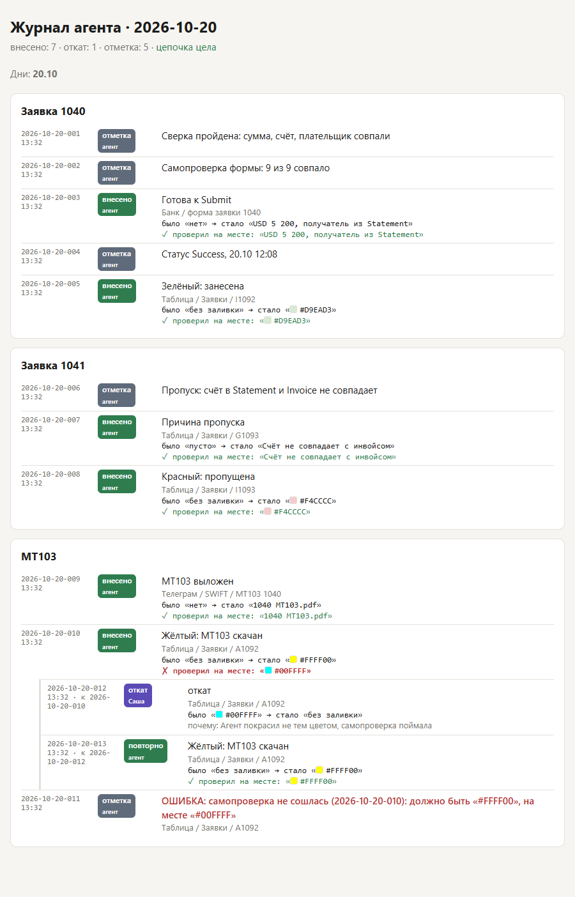

- 1
Скачай архив из Телеграма
Файл codex-agent.zip. Внутри:
AGENTS.mdПравила и твоё ТЗ дословно. Codex читает его сам в каждом чате и после каждого сжатия.rules.jsonВсе цвета, коды, порядок валют, столбцы таблицы. Агент берёт значения только отсюда.СТАРТ.txtТекст для первого чата. Вставишь на шаге 6.Журнал.cmdДвойной клик: открыть журнал действий агента в браузере.Откат.cmdДвойной клик: отметить откат. Работает только с твоим PIN.ПИН.cmdДвойной клик: задать PIN для отката..agents/skills/Три инструкции для агента: занесение заявки, MT103, журнал..codex/config.tomlСтавит уровень рассуждений «высокий» для этой папки.tools/Скрипты журнала, настроек, проверки файлов и (по желанию) скачивания из Телеграма.Файлы, имя которых начинается с точки (.agents, .codex), Проводник может не показывать. Они на месте.
Архив скачан.
- 2
Проверь, что есть Python
Нажми Пуск, набери PowerShell, открой и вставь:
python --version
Ответ вида Python 3.12.x (3.10 или новее) означает, что всё в порядке. Если пишет «не найдено», поставь Python с python.org и при установке поставь галочку Add python.exe to PATH. Потом закрой и снова открой PowerShell и проверь ещё раз.
Python есть.
- 3
Распакуй в C:\codex-agent
Правой кнопкой по архиву → «Извлечь всё» → путь C:\codex-agent. Не на рабочий стол и не в «Загрузки»: так путь короткий и не меняется.
Открой папку. Сверху должны лежать AGENTS.md и СТАРТ.txt, а не ещё одна папка codex-agent внутри. Если вложилась вторая папка, перенеси её содержимое на уровень выше.
Жёлтым отмечено то, что запускаешь ты сам двойным кликом. Остальное для агента. Файлы лежат в C:\codex-agent.
- 4
Открой папку в Codex как проект
В Codex слева раздел Проекты → добавить проект или открыть папку → выбери C:\codex-agent.
Если Codex спросит, доверять ли папке, отвечай «Доверять». Это обязательно: для папки без доверия Codex не читает AGENTS.md, и все правила пропадут.
Названия кнопок у тебя могут немного отличаться. Смысл тот же: добавить папку и разрешить ей доверие. Проект открыт, папке доверяем.
- 5
Подними уровень рассуждений
Внизу у поля ввода сейчас стоит «GPT-6 Sol Лёгкое». Нажми на него и выбери «Высокое». Если такого пункта нет, выбери самый высокий из доступных, но не ниже «Среднего».
На «Лёгком» модель меньше думает перед действием. Для переводов денег это лишняя экономия: ошибка в счёте стоит дороже минуты ожидания. Файл .codex/config.toml ставит «высокий» уровень для этой папки сам, но лучше проверить и в окне.
Уровень «Высокое».
- 6
Новый чат в проекте: вставь СТАРТ.txt
Нажми «Новый чат» внутри проекта codex-agent. Вставь текст ниже целиком (он же лежит в СТАРТ.txt) и отправь.
Это первый запуск проекта. Все файлы уже лежат в этой папке, их писал не ты: ничего в них не переписывай, не улучшай и не создавай заново. Сделай по шагам и после каждого покажи вывод: 1. python --version (нужен 3.10 или новее; если Python нет — скажи мне и остановись) 2. python tools/check_kit.py 3. python tools/journal.py resume 4. python tools/setup.py missing Задай мне ВСЕ вопросы из вывода ОДНИМ сообщением, пронумеруй. Дождись ответа. Каждый ответ запиши: python tools/setup.py set <поле> "<значение>" Потом снова python tools/setup.py missing — должно быть «Все настройки заполнены». 5. python tools/journal.py note --cat "Система" --what "Комплект установлен, настройки заполнены" 6. Перескажи мне коротко своими словами: 8 пунктов ТЗ из AGENTS.md, все запреты, какие команды журнала тебе доступны и что ты делаешь, если ошибся. В банк, таблицу и Телеграм пока не заходи. Дальше работаю фразами вроде «Занеси заявки 1040–1045» и «Докачай свифты за сегодня».
Если на шаге «check_kit» агент пишет «Комплект не совпадает», значит, какой-то файл испорчен. Распакуй архив заново.
Агент проверил файлы.
- 7
Ответь на вопросы агента одним сообщением
Агент спросит всё, чего нет в ТЗ, одним списком. Ответь так же одним сообщением, по номерам. Он запишет ответы в rules.json, и каждая запись попадёт в журнал. Потом он больше не переспрашивает.
- Папка документов: куда ты скачиваешь Statement и Invoice из рабочей группы. Например C:\Users\…\Downloads\Заявки.
- Charge to: OUR, BEN или SHA.
- Beneficiary Citizenship: Citizen или Non Citizen.
- Relationship with Remitter: Overseas Subsidiary, Non-Affiliated, Shareholder или Group.
Отдельно проверь в rules.json слабо-красный цвет. В ТЗ кода нет, стоит #F4CCCC. Если у вас другой, скажи агенту: «Запиши colors.skipped = #……».
В конце агент перескажет правила своими словами. Если что-то пересказал неправильно, поправь сразу, пока он не начал работать.
Настройки заполнены.
- 8
Задай PIN для отката
В папке C:\codex-agent двойной клик по ПИН.cmd. Введи PIN из 6 и более цифр, повтори. Символы при вводе не видны, так и задумано.
PIN не пиши в чат Codex и никуда не сохраняй рядом с папкой. Пока агент его не знает, он не может ни откатить, ни изменить, ни удалить запись журнала. Только дописать новую.PIN задан.
- 9
Работа каждый день
Документы скачиваешь, как раньше, в ту папку, которую назвал агенту. Дальше пишешь агенту обычными словами. Примеры:
Занеси заявки 1040–1045
Нажал Submit по всем. Проверь статусы в банке и отметь в таблице
Докачай свифты за сегодня и выложи
Как идёт пачка:
- агент сверяет документы, собирает формы до экрана Submit и останавливается;
- ты смотришь и нажимаешь Submit сам, потом пишешь «нажал»;
- агент проверяет фактический статус и только после этого красит ячейку.
Как агент проверяет сам себя. Три проверки, все записываются в журнал:
- после каждого действия он заново открывает ячейку или поле и записывает, что там на самом деле. Не совпало с задуманным: журнал сам ставит «ОШИБКА», и агент останавливается;
- перед Submit сверяет каждое поле экрана с документами и пишет результат, например «Самопроверка формы: 9 из 9 совпало»;
- в конце пачки запускает аудит. Это проверка программой, а не моделью: цвет не в том столбце, зелёный без статуса Success, Submit без сверки. Пока аудит не чистый, агент не пишет «готово».
Аудит можно попросить и самому в любой момент:
Запусти python tools/journal.py audit и покажи результат целиком
После каждой пачки начинай новый чат. Агент сам скажет: «Пачка готова, начните новый чат». Новый чат продолжит по журналу с того места, где остановился прошлый, ничего объяснять заново не надо.
Понятно, как работать.
- 10
Если появилось «Контекст автоматически сжат»
Ничего делать не нужно. Правила из AGENTS.md Codex подставляет заново, а агент по правилам запускает проверку журнала и продолжает со следующего шага.
Если кажется, что он поплыл (повторяет сделанное, путает цвета), напиши:
Стоп. Запусти python tools/journal.py resume, перечитай AGENTS.md и нужный SKILL.md и скажи, на чём остановились
Понятно.
- 11
Журнал: что делал агент
Двойной клик по Журнал.cmd. Откроется страница: дни, внутри по заявкам, под каждой строкой всё, что потом происходило с тем же местом. У каждой записи указано, где (таблица и ячейка, форма в банке, тема SWIFT), что было до и что стало.

Пример. Агент хотел покрасить A1092 жёлтым, перечитал ячейку и увидел голубой. Самопроверка (строка с ✗) сама записала «ОШИБКА», агент остановился. Откат сделал пользователь, после этого агент покрасил правильно, и проверка прошла (✓). - Агент может только дописывать. Старые строки он не правит и не удаляет.
- Если кто-то всё же изменит или сотрёт строку в файле журнала, сверху страницы появится «ЖУРНАЛ ПОВРЕЖДЁН», и агент остановит работу.
- Файлы журнала лежат в C:\codex-agent\journal, по одному на день. Прошлые дни закрываются «только чтение».
Журнал открывается.
- 12
Откат: только ты и только руками
Если агент ошибся, он не исправляет сам. Он пишет в журнал «ОШИБКА», останавливается и сообщает тебе номер записи.
- Двойной клик по Откат.cmd.
- Введи номер записи из журнала, например 2026-10-20-007. Окно покажет, где это и какое значение было до.
- Верни это значение руками в таблице или в банке и проверь.
- Нажми Enter, коротко напиши причину, введи PIN.
В журнале под исходной строкой появится «откат · Саша». Агент такую запись сделать не может.
Перевод, по которому уже нажат Submit, откатом не отменяется. Это решается в банке.Понятно, как откатить.
- 13
Проверь автоматизацию «Виртуальный офис»
У тебя есть запланированная задача, которая срабатывает каждые 10 минут. Если она запускается не в проекте codex-agent, то правил, журнала и запретов не видит. Открой её настройки и выбери папку C:\codex-agent. Если поменять папку нельзя, пересоздай задачу внутри проекта.
Автоматизация в правильной папке.
- 14
Потом, по желанию: агент сам забирает документы из группы необязательно
Сейчас документы качаешь ты, чтобы не тратить квоту Codex. В комплекте есть скрипт tools/tg_fetch.py: он скачивает Statement и Invoice по номерам заявок из рабочей группы в твою папку. Квоту модели он не тратит, потому что файлы качает сам скрипт, а не агент через браузер. Работает от твоего аккаунта и только читает: ничего не пишет и не отправляет.
Как включить
- На my.telegram.org → API development tools получи api_id и api_hash.
- Создай в C:\codex-agent файл .env с двумя строками: TG_API_ID=… и TG_API_HASH=…. Впиши сам, в чат не отправляй.
- В PowerShell в этой папке: pip install telethon, затем python tools\tg_fetch.py login --phone +…, потом --code из Телеграма.
- Скажи агенту: «Включи Телеграм-блок, группа такая-то». Он запишет telegram.enabled и telegram.group через настройки.
- Дальше фраза «Забери документы 1040–1045 из группы».
Решено.